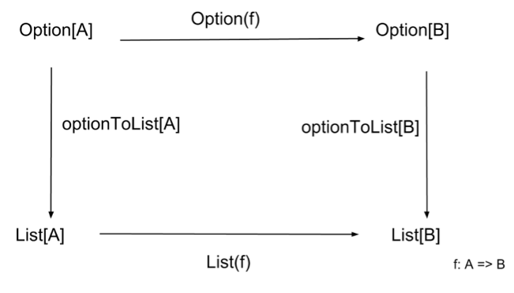

Category Theory at Strange Loop 2013
 Back in September 2013 I gave a talk titled “Category Theory: An Abstraction for Anything” at the Strange Loop Conference. A few days ago, the video for my talk was released.
Additionally, I wrote a blog post about this talk that was published on my employer’s blog.
Here’s the talk abstract, reproduced from the Strange Loop website:
Category theory provides a mathematically sound foundation on which we can create collections of objects and express morphisms between them. Together, along with a few simple rules, a collection of objects and morphisms forms a category to which we can apply many useful results, such as the uniqueness of an identity morphism. Furthermore, once we have a category in hand, we can formally explore the relationships it has with other categories, deducing powerful and practical abstractions.
The power of category theory lies in the relative simplicity and accessibility of its definitions. From just a handful of straightforward concepts, we can formalize many concrete ideas such as directed acyclic graphs, currying, polymorphic functions, and Haskell itself. This talk will introduce the basics of category theory, while simultaneously diving into specific programming-related examples of categories, functors, and natural transformations. In addition to exploring profound and beautiful concepts, this talk aims to provide you with the tools necessary to recognize category-theoretical patterns in your own programming projects.